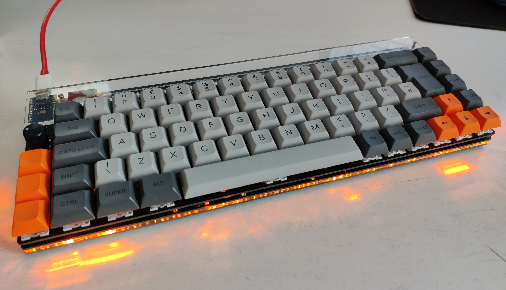

Nibble Keyboard
Project: January 2021
Writeup: April 2021
Tasteful? It's up for debate.
Of course I'm into keyboards. What kind of soft-handed computer boy do you take me for?
This was my first full custom build assembled from the excellent Nullbits "Nibble" 65% kit. Usually I like a TKL, but I saw this actually in stock for once and knew I should grab it while I had the chance!
It's extremely complicated to navigate the ever changing landscape of PCBs, switches, lubricants, layouts, keycaps, profiles, controllers, firmwares etc. in the world of mechanical keyboards. But that's simply the price you pay to get just what you want. In this particular build, I went with:
- Nullbits "Nibble" 65% case and PCB, black version)
- Plus the optional Mill-Max 0305 pin receptacles
- Kailh Speed Copper switches, filmed and lubed
- Full-custom Signature Plastics DSA keycap set
The Nibble is an all through-hole PCB which is pretty straightforward to assemble. The big line of diodes is left visible at the top and looks great! (Just keep them all in line...) I also socketed the controller board for safety.
I also sourced the ~200 Mill-Max sockets required to make the PCB hot-swappable. Not needed, I just liked the idea. The sockets are expensive (my gold plated ones are like 15p each! At supply is reliable from Mouser) but you can't argue with the convenience of hotswap. They're easy to solder.
The Kailh switches are their short-throw "speed" variety with a delightful 3mm of travel (compared to the usual MX default of 4mm). The "copper" variants are tactile, my preferred style for environments where I'm not in close proximity to anyone else. They're not obnoxiously loud, I just still wouldn't use them in an office: I'm not that guy (my office board has Silent Reds). I'm super impressed with these switches. Lubed and filmed, they have the lowest cap wobble I've ever used and it's such a pleasure to start typing every day. I love the short travel. I find it better for general use, I didn't buy them for the alleged "optimal gaming performance" you usually see quoted as the main draw of so-called "speed" switches. And they're very reasonably priced. Highly recommend.
I also think the keyset came out beautifully. The DSA profile was an experiment for me, but I think it works great on this style of board that wants to sit low to the table. I was slightly nervous about getting all of the right keys I needed for this moderately unusual form-factor and moderately unusual layout (ISO). But the options are all laid out nicely on the SP pages (linked above) and I was pleased to get it all right! They're expensive, but needing ISO really cuts down your options when shopping around. I don't begrudge them the price at all though: fit and finish is absolutely perfect. Worth every penny.
This was also an opportunity to play around with QMK. Pretty impressed with it overall, I've tried out a lot of different stuff but I'm currently not taking advantage of any of the more exotic features. I never found anything super necessary, but the flexibility would really come into its own with a super bespoke build or funky layout.
Overall I love the board. I'm just not crazy about the form-factor. I don't miss the function row, it's the page-up / page-down buttons being directly right of the enter key and the extra macro keys directly to the left of shift. I've realised my muscle-memory is set up to go for the keys at the edge of the main block for either of these super common actions, so when the keys at the edge are now completely different, you screw up a lot! It's getting better over time, I just feel like the whole thing would be near perfect if they put 5mm in between the main block and the extras*. It'd be worth the extra size. It's not like the smallest possible form factor is the main design intent here anyway.
*I think the VA68 style boards are a great example of how this is done - If I could find one with a hotswap PCB and without the meh Varmilo firmware I'd be all over it! One day...
Now I'm very much looking forward to my CU65 arriving! Decided to give the 65% another go with the much reduced footprint of a proper PCB without any additional fills. Also by the way, definitely don't get into mechanical keyboards. You will never be satisfied.